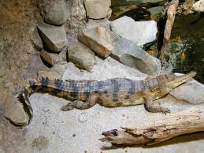
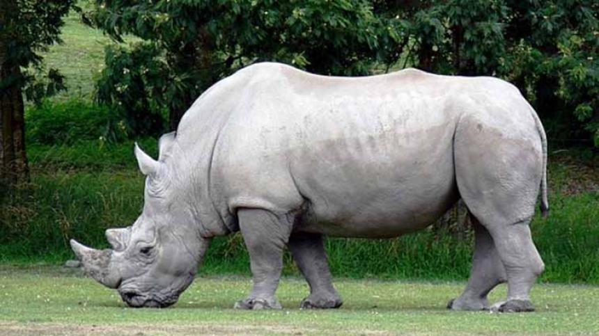
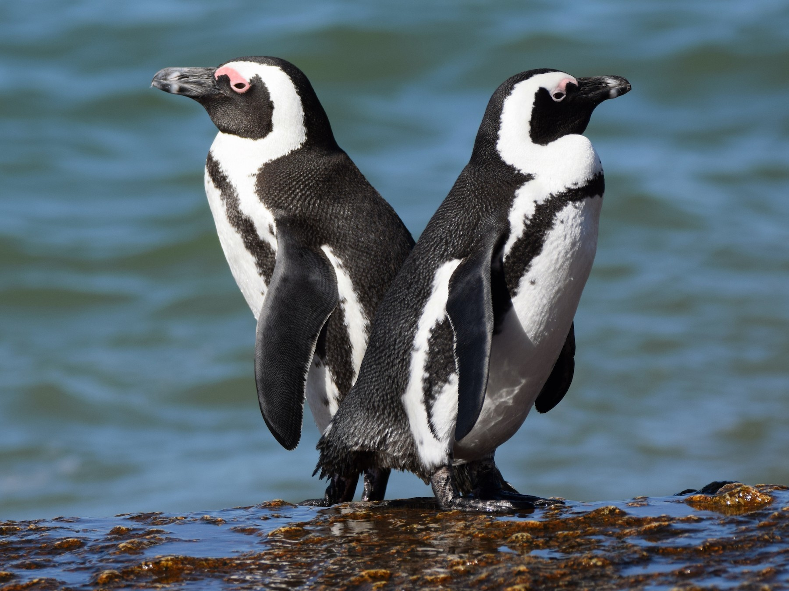
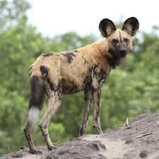
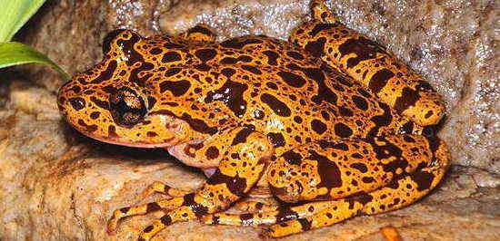
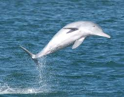

El ecuatoriano Serafín del platanar
El buitre dorsiblanco africano (Gyps africanus) es el primero de nuestros animales
en peligro de extinción en África. Habita en los bosques, desiertos, sabanas
y zonas urbanas del continente africano. Es único en su especie,
su promedio de vida es de 18 años y no migra. El estatus de conservación de
este buitre ha sufrido radicalmente durante el siglo XXI, ya que en 2004 era
catalogado como de preocupación menor, mientras que en 2019 ha pasado a
considerarse en peligro crítico de extinción.
Son diversas las amenazas del dorsiblanco, entre ellas la más importante es la acción de
la agricultura y la ganadería, ya que se ve desplazado por estas actividades, se destruyen
los árboles donde anida y con frecuencia sufre envenenamientos. Además,
también está en peligro debido a la caza ilegal.

Cocodrilo Hociquifino Africano
El cocodrilo hociquifino africano (Mecistops cataphractus) es una de las tres especies de
cocodrilos que habitan África. Mide entre 2,5 y 4 metros y la mayor parte de su vida se
desarrolla en el agua, por lo que prefiere zonas de vegetación espesa para ocultarse de
sus presas. También está en peligro crítico de extinción.
Entre la amenazadas del cocodrilo hociquifino africano se encuentra la caza para obtención
de su piel, el crecimiento de las ciudades, que lo ha expulsado de sus hábitats naturales,
el efecto en la naturaleza de la industria minera y gasífera, la polución y los cambios climáticos.

Rinoceronte Blanco
El rinoceronte blanco (Ceratotherium simum) pesa hasta 4 toneladas y se caracteriza por presentar
un tono gris claro que le da su nombre, en contraste con la piel negra de las otras especies de
rinocerontes. Desde 1994, la especie ha pasado de considerarse una especie vulnerable a una especie
casi amenazada.
A pesar de esto y aunque se desconoce el número de ejemplares adultos existentes, en la Lista Roja
de Especies Amenazadas de la UICN aparece registrado un incremento de la población. La principal
y casi única amenaza del rinoceronte blanco es la caza ilegal, realizada para traficar su cuerno,
cuyo uso es popular en la medicina china y también como complemento ornamental.

Asno Salvaje Africano
Otra de las especies incluidas en la lista de animales en peligro de extinción es el asno salvaje
africano
(Equus africanus). Alcanza 2 metros de largo y pesa hasta 300 kilos.
El pelaje varía de un gris claro a beige, además de blanco con rayas negras en las patas.
Son animales solitarios que habitan zonas desérticas, por lo que pueden soportar varios días sin
beber agua.
El estatus de conservación ha empeorado en los últimos 20 años, actualmente se considera en peligro
crítico
de extinción. El asno se ve afectado por el efecto de los múltiples conflictos civiles que azotan
el continente, la sequía, la caza y la destrucción de su hábitat por la agricultura.

Pingüino de El Cabo
El pingüino de El Cabo (Spheniscus demersus) es también conocido como pingüino anteojos debido a
la distribución de colores que presenta en la cabeza. Alcanzan hasta 70 centímetros de estatura
y pesa 5 kilos. Se alimenta de pescados, crustáceos y otros animales marinos.
Está catalogado en peligro de extinción.
Actualmente, la especie solo se encuentra en las costas de Namibia, Angola, Mozambique, Sudáfrica,
Congo y Gabón. Sus principales amenazas son el cambio climático, la polución industrial,
la caza, el efecto de la pesca y la minería, entre otras actividades humanas.

Licaón
Siguiendo con la lista de animales en peligro de extinción en África llega el turno del licaón
o perro salvaje africano (Lycaon pictus). Es un mamífero de apariencia similar a la hiena.
Pesa hasta 30 kilos y se distingue por un pelaje color arena con zonas manchadas de negro
y orejas alargadas. Vive y caza en manadas, y se alimenta de distintos mamíferos ungulados.
Se encuentra en peligro de extinción.
En la actualidad, se estima que existen alrededor de 1.409 ejemplares adultos, distribuidos
en pequeñas zonas de las sabanas Namibia, Angola, Zambia, Malawi y otros países africanos.
Se encuentra en peligro debido al efecto de los distintos conflictos civiles, la caza,
la expansión de las poblaciones y la agricultura, entre otras razones.

Rana Fantasma De Hewitt
Otro de los animales en peligro de extinción en África es la rana fantasma (Heleophryne hewitti),
endémica del Cabo Oriental de Sudáfrica. Habita las zonas de vegetaciones bajas y los pantanos
de esa pequeña área sudafricana. Se caracteriza por presentar un cuerpo en tonos dorados
verdosos con manchas color vino oscuro. Está catalogada como especie en peligro de extinción.
La especie se considera en peligro debido a la destrucción de su hábitat por la siembra de especies
exóticas, la sedimentación de los ríos debido a la agricultura y la actividad industrial,
y la introducción de peces depredadores.

Delfín giboso del Atlántico
El delfín giboso (Sousa teuszii) habita las costas del océano Atlántico que rodean el
continente africano. Alcanza 2 metros de largo y se caracteriza por presentar una aleta
dorsal abultada, lo cual le otorga su nombre. Se alimenta de peces más pequeños.
Es una especie en peligro crítico de extinción, pues se estima que solo existen 1.500 ejemplares
adultos.
Está amenazado por el efecto de la actividad agropecuaria, la introducción de especies foráneas
en su hábitat, la pesca y el efecto de la contaminación debido a la expansión de las poblaciones.

Africa Y Su Problema "La Caza"
Las cifras son rotundas. La población de cuatro de los Big Five de África, los cinco tesoros de los safaris
y los animales más difíciles de cazar (león, leopardo, rinoceronte, elefante y búfalo),
ha caído durante las últimas décadas
Los elefantes han perdido un 30% de sus ejemplares entre 2007 y 2014, lo que significa que en siete años han
muerto 144.000, según el censo realizado por el Programa de Naciones Unidas para el Medio Ambiente.
Hay un 42% menos de leones que hace 21 años (quedan entre 25.000 y 30.000 en África,
según la Lista Roja de la UICN). El animal se encuentra en la categoría de vulnerable
entre las especies más amenazadas del planeta, al igual que el leopardo africano.
Por último, en el continente hay unos 25.000 rinocerontes, y durante los últimos nueve años
las mafias han matado a más de 6.000.
AYUDANOS A SALVAR ESTOS ANIMALES, DONANDO A NUESTRA FUNDACION